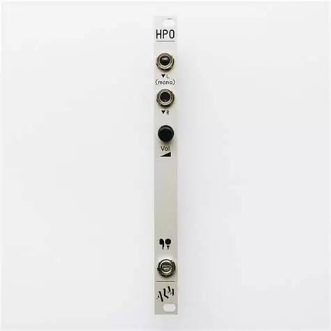

ALM Busy Circuits HPO Headphone Output

Manufacturer: ALM Busy Circuits Type: Headphone Output HP: 2 | Depth: 38mm Power: +12V 5mA / -12V 5mA
Overview
The HPO (ALM019) is a no-frills stereo headphone amplifier in a super-slim 2 HP, skiff-friendly package. Patch a signal in, plug headphones into the 3.5mm stereo jack, and set the level with the single volume knob. It is low noise and good sounding — a simple way to monitor a patch privately without tying up the main outputs.
Inputs & Outputs
| Jack | Signal | Notes |
|---|---|---|
| IN L | Audio | Left channel input; doubles to both ears when nothing is patched into IN R |
| IN R | Audio | Right channel input for stereo sources |
| PHONES | Stereo audio | 3.5mm stereo headphone output, level set by the volume knob |
Patching Notes
Mono monitoring: Patch a mono signal into the left input only and it is doubled up into both sides of the headphones — no stereo source or extra mult needed.
Cueing: Take a parallel copy of a voice (e.g. via the A-180-3 buffered multiple) into the HPO to audition or tune it in headphones while the main mix keeps running to the speakers.
End of chain: Sit it after the A-138b mixer output to monitor the whole system on headphones — useful for late-night patching without an audio interface or speakers.